| Round 1, 2010 - Geelong vs. Essendon | |||||||
| Team | Player name | % of game played | Kicks | Handballs | Marks | Goals | Behinds |
|---|---|---|---|---|---|---|---|
| Geelong | Gary Ablett | 0.92 | 13 | 24 | 5 | 2 | 2 |
| Geelong | Jimmy Bartel | 0.91 | 10 | 19 | 6 | 2 | 0 |
| Geelong | Tom Hawkins | 0.87 | 8 | 6 | 7 | 2 | 1 |
| Essendon | Alwyn Davey | 0.65 | 6 | 4 | 0 | 2 | 1 |
| Essendon | Angus Monfries | 0.89 | 10 | 6 | 5 | 2 | 1 |
| Essendon | David Zaharakis | 0.75 | 10 | 9 | 5 | 2 | 2 |
The awkward, exciting adolescence of sports analytics
Dr Jacquie Tran | 1 June 2026
ANZIAM Vic One-Day Workshop
A fish out of water
A multidisciplinary, applied sport scientist
My usual audiences are…sport science students and other people working in sport!
From the ANZIAM website:
Our role is to…Provide for the exchange of ideas and information between applied mathematicians and users of mathematics in science, engineering and industry
My goal is to shed light on how mathematics and statistics is used in sport today, and perhaps entice you to work in this space in future!
The spark
Athens 2004 Olympic & Paralympic Games
Novel, biomimetic textile developed for swimsuits
Fiona Fairhurst - Inspired by shark denticles
Oeffner and Lauder (2012):
Reduced drag, greater thrust with Speedo FSII
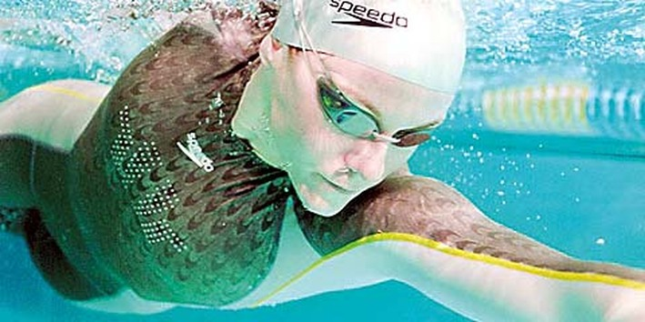

Honours - Sports Biomechanics
Working with wearable sensors developed for sport and 3-D motion capture
PhD - Applied Sports Physiology
Started learning about mixed models and how to code in R
Research Fellow
Analytical support across sport science, opposition analysis, recruiting
Research projects using network analysis and decision tree models
Senior Insights Researcher (initially)
Head of Intelligence (later)
My first foray into longitudinal qualitative research
Developed data engineering knowledge, applied text mining techniques
Strategic Insights Analyst
Individual contributor role, using quant and qual methods for reporting and internal research / analysis projects
A new context, beyond sport
Lecturer in Sports Analytics & Performance Analysis
Sharing what I’ve learned through teaching
Pursuing research to learn and apply Bayesian modelling, network analysis, and clustering techniques
A young field growing rapidly
Technology changes
Increased use of video
Wearable and portable technologies
Moving beyond count statistics to detailed event records (play-by-play)
Multi-camera optical tracking systems
(e.g., Hawk-Eye)
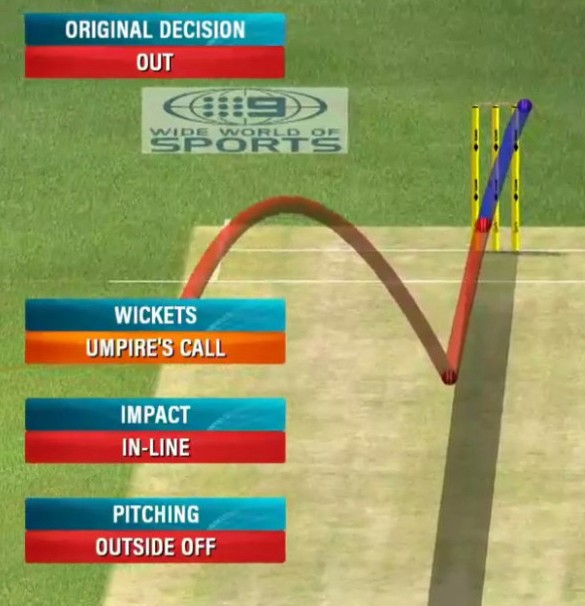
Data and analysis practices
Programmatic approaches to working with data
Accessibility of statistical software
Advancements in computer vision capabilities
Improved data storage practices enabling data to be integrated from multiple sources
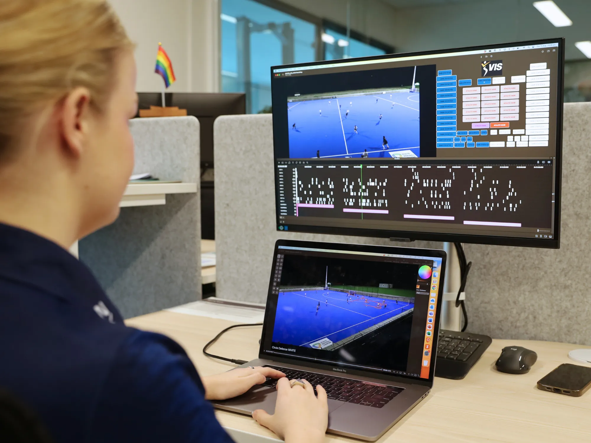
Education and industry changes
Substantial growth in private sports data and technology providers
More data supplied by governing bodies and broadcast partners
Competitor practices
Dedicated tertiary courses for sports analytics
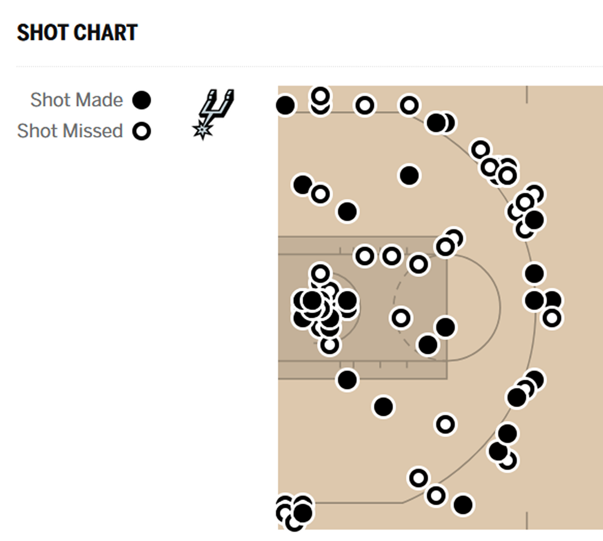
“Awkward adolescence”
Growth in sports analytics has been rapid but uneven
Sometimes growing in ways we’re not ready for - “running before we can walk”
Role clarity and integration within a performance team
Even still, there is a lot that is exciting about change and maturation!
Signal processing
Processing signals from wearable / portable devices
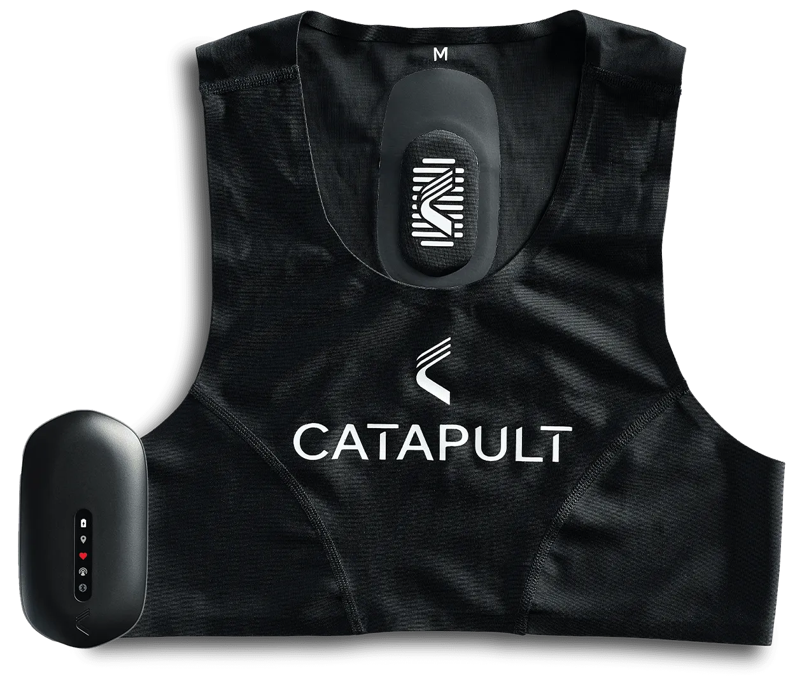
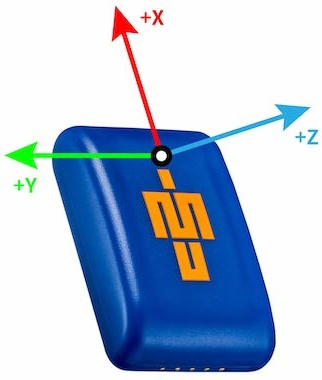
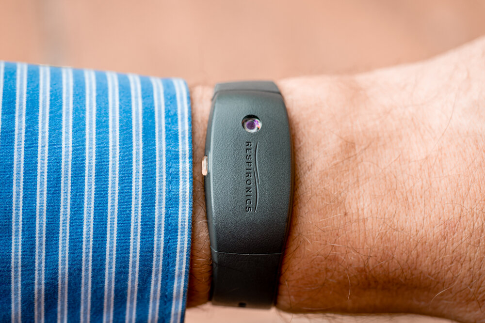
Example: Identifying sleep stages from actigraphy
Acker et al. (2021):
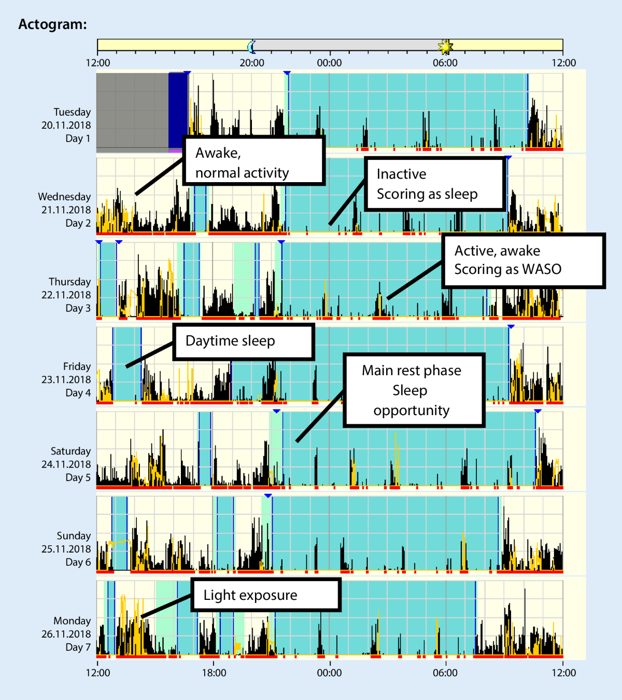
Fluid dynamics
Example: Individualised suits for track cyclists
HPSNZ (2025):
Collaboration between
- Cycling NZ
- High Performance Sport NZ’s Goldmine Innovation team
- One Studio
Individualised approach to textile development, considering rider shape and position on bike
Tunnel and track testing - Reduced aerodynamic drag compared to previous suits
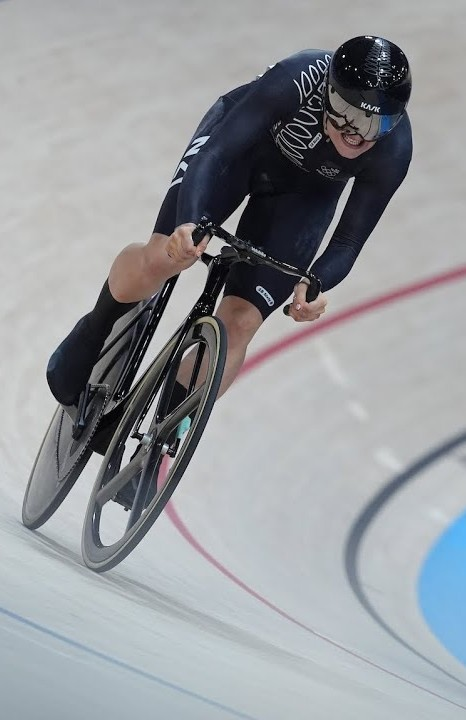
Example: Sit ski design
HPSNZ (2018):
Collaboration between
- Snow Sports NZ
- High Performance Sport NZ’s Goldmine Innovation team
- Dynamic Composites
Re-designed sit ski reduced drag by 1.5%
PyeongChang 2018, Downhill Sitting:
Corey Peters won bronze in 1:26.01
Only 0.22 seconds ahead of 4th! (0.26% diff.)
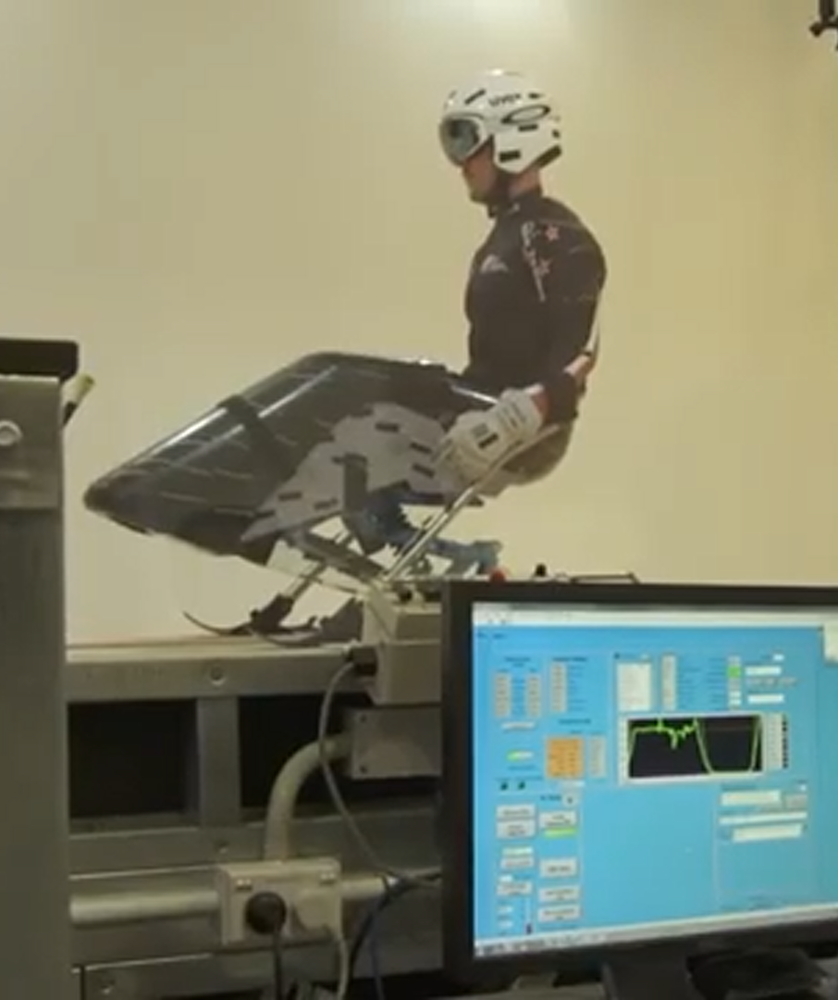
Patterns of play
Counts of game actions
Snippet of AFL game statistics, via AFL Tables (2010):
Issues
No contextual information
Detail lost in summing up values
Difficult to evaluate quality of actions
Possession chains / play-by-play
Snippet of AFL possession chain data:
| Round 1, 2015 - Carlton vs. Richmond | |||||||||||||||
| chain | team | opposition | chain_start_type | chain_end_type | player | disposal | disp_x_start | disp_y_start | disp_xy_start_zone | disp_x_end | disp_y_end | disp_xy_end_zone | quarter | period_seconds | disposal_seconds |
|---|---|---|---|---|---|---|---|---|---|---|---|---|---|---|---|
| 7 | RICH | CARL | Kick In | Turnover | T.Hunt | kick | 56 | -24 | D | 31 | -60 | D | 1 | 245 | 250 |
| 7 | RICH | CARL | Kick In | Turnover | K.McIntosh | kick | 31 | -60 | DM | 24 | -56 | DM | 1 | 252 | 259 |
| 8 | CARL | RICH | Turnover | Turnover | T.Menzel | kick | 24 | -56 | AM | 41 | -27 | DM | 1 | 260 | 268 |
| 9 | RICH | CARL | Turnover | Goal | D.Grimes | kick | 41 | -27 | D | 19 | 22 | D | 1 | 270 | 274 |
| 9 | RICH | CARL | Turnover | Goal | S.Lloyd | handball | 19 | 22 | DM | 7 | 22 | DM | 1 | 277 | 277 |
| 9 | RICH | CARL | Turnover | Goal | B.Houli | kick | 7 | 22 | DM | -47 | 5 | DM | 1 | 279 | 283 |
| 9 | RICH | CARL | Turnover | Goal | B.Griffiths | kick | -47 | 5 | F | -80 | 0 | F | 1 | 285 | 314 |
Enhancements:
More info about when and where actions took place
Connections between actions and outcomes
Enables analysis of actions in sequence
Visualising possession chains
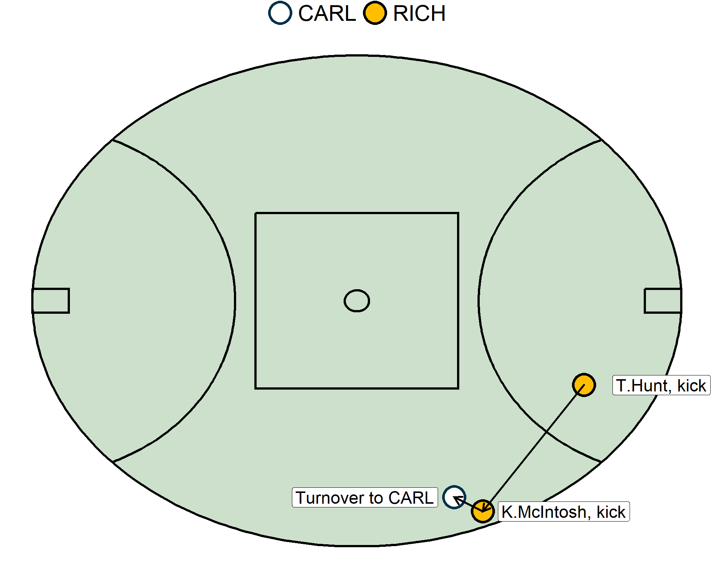
Visualising possession chains
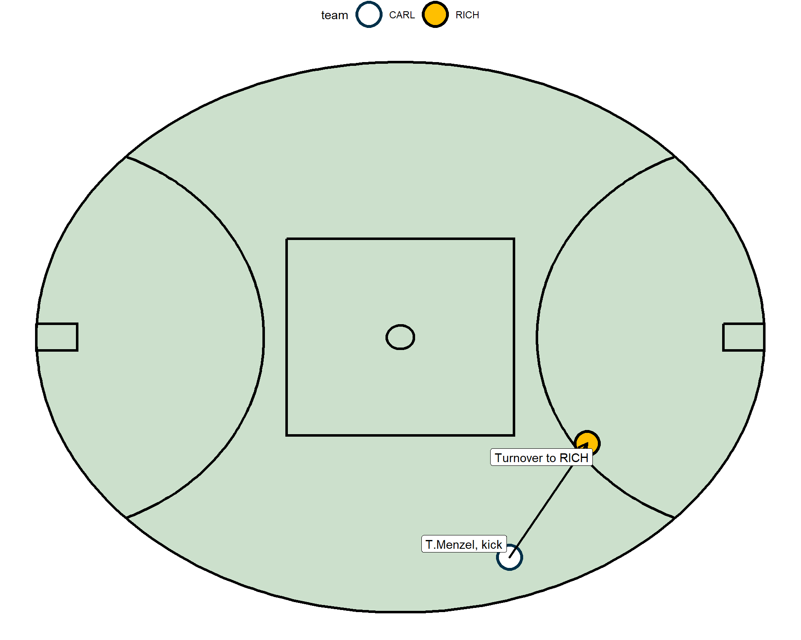
Visualising possession chains
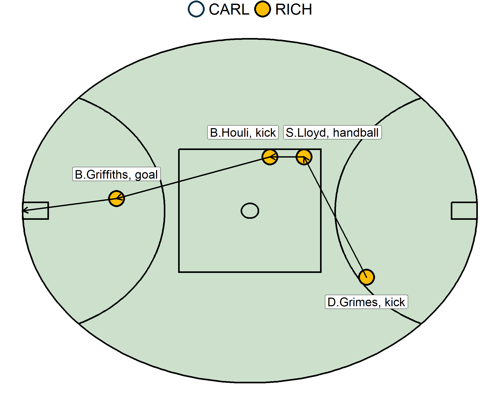
Network analysis in Australian football
Taylor et al. (2020): https://doi.org/10.1080/02640414.2020.1740490
Aims: Construct networks using possession chain data, and examine how their network characteristics relate to game outcomes
Data: ~150,000 possession events from all matches played in the 2015 AFL season (206 games, regular season and finals)
Network analysis: Edge list –> Weighted edge –> Adjacency matrix –> Determine network metrics (degree centrality, density, cluster coefficient, entropy)
Results: The most direct ball movement patterns (i.e., low network density values) were observed for the most desirable outcomes. More successful kick-in chains exhibited less predictable ball movement patterns as indicated by high entropy values.
Key take-away: Using sequential possession data enables quantification of how players on the same team interact with one another - going beyond qualitative judgments of whether a team seems predictable, direct, heavily reliant on a few key players, etc.
Spatiotemporal analysis
Background about GPS data
- Progressing to: Spatiotemporal analyses to uncover tactical structures
- Seakins et al. https://www.mdpi.com/1424-8220/23/10/4891
- Raabe et al. https://doi.org/10.1080/02640414.2024.2414363
Deriving features from visual information
Important origins: Live notational analysis
Example from Rostgaard et al. (2008):
Notational analysis by hand of 1 player, prior to and in contact with the ball during a soccer match.
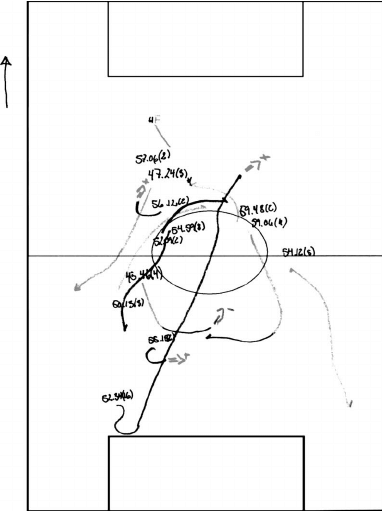
Software-based notational analysis
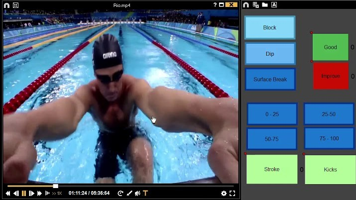
Automated video annotation
Example: The Deep Detector for Actions and Swimmer Heads system (DeepDASH) proposed by Hall et al. (2020)
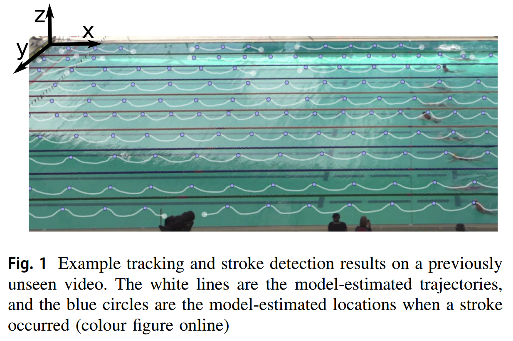
An industry example
National Football League (NFL)
Prof Michael Lopez
Now: Senior Director of Football Data & Analytics, NFL
Previously:
- Bachelor in Mathematics | Bates College
- Masters in Statistics | University of Massachusetts, Amherst
- PhD in Biostatistics | Brown University
National Football League (NFL)
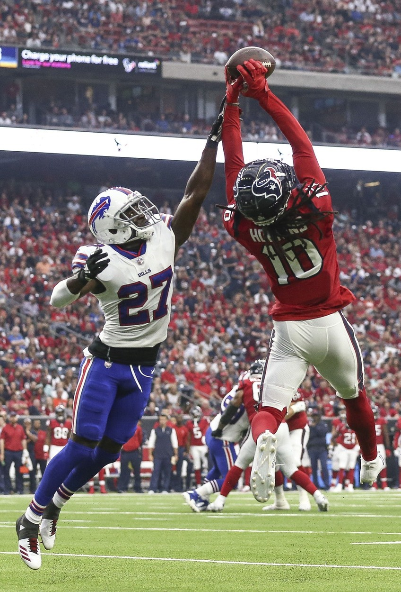
Lopez et al. (2026):
“Our job is to make the game better.”
Competitiveness of the game
Officiating
Health and safety
Pace of play
Use of modern tech to improve the game
Example: Late-game strategy in the NFL
NFL Football Operations (2021):
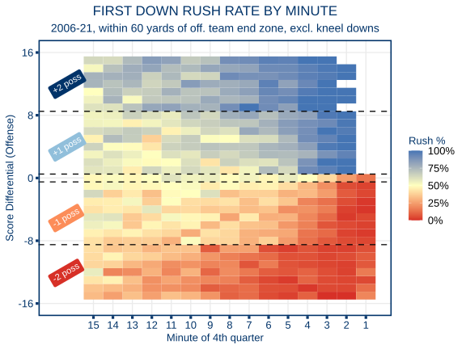
What might the future hold?
Opportunities
Many rich sources of data across scientific disciplines, although…
Better mathematical and statistical knowledge needed to analyse data in robust and efficient ways - “We don’t know what we don’t know”
Volume of available data has grown rapidly. But what really matters?
Opportunities for leaders to use information and analysis more effectively
Dr Jacquie Tran
🌐 www.jacquietran.com
📧 jacquie.tran@latrobe.edu.au
💻 https://jacquietran.github.io/2026_anziam_vic
References
Acker, Jens G., C. Becker-Carus, Antje Büttner-Teleaga, et al. 2021. “The Role of Actigraphy in Sleep Medicine.” Somnologie 25 (2): 89–98. https://doi.org/10.1007/s11818-021-00306-8.
AFL Tables. 2010. AFL Tables - Geelong v Essendon - Fri, 26-Mar-2010 7:40 PM (6:40 PM) - Match Stats. https://afltables.com/afl/stats/games/2010/050920100326.html.
Hall, Ashley, Brandon Victor, Zhen He, et al. 2020. “The Detection, Tracking, and Temporal Action Localisation of Swimmers for Automated Analysis.” Neural Computing and Applications 33 (12): 7205–23. https://doi.org/10.1007/s00521-020-05485-3.
HPSNZ. 2018. Kiwi Innovation Boosting Performance. https://hpsnz.org.nz/journal-entries/corey-peters/.
HPSNZ. 2025. Skin Suit Collaboration Contributes to Paris Cycling Success. https://hpsnz.org.nz/journal-entries/skin-suit-collaboration-contributes-to-paris-cycling-success/.
Lopez, Michael, Eric Bradlow, and Adi Wyner. 2026. Scaling Insights: How Big Data and Simulation Are Transforming the NFL | Moneyball Podcast - Knowledge at Wharton. https://knowledge.wharton.upenn.edu/podcast/moneyball/scaling-insights-how-big-data-and-simulation-are-transforming-the-nfl/.
NFL Football Operations. 2021. How NFL Teams Use the Game Clock – and What It Says about Late-Game Strategy. https://operations.nfl.com/gameday/analytics/stats-articles/how-nfl-teams-use-the-game-clock-and-what-it-says-about-late-game-strategy/.
Oeffner, Johannes, and George V. Lauder. 2012. “The Hydrodynamic Function of Shark Skin and Two Biomimetic Applications.” Journal of Experimental Biology 215 (5): 785–95. https://doi.org/10.1242/jeb.063040.
Rostgaard, Thomas, F Marcello Iaia, Dennis S Simonsen, and Jens Bangsbo. 2008. “A Test to Evaluate the Physical Impact on Technical Performance in Soccer.” Journal of Strength and Conditioning Research 22 (1): 283–92. https://doi.org/10.1519/jsc.0b013e31815f302a.
Taylor, Noni, Paul B. Gastin, Olivia Mills, and Jacqueline Tran. 2020. “Network Analysis of Kick-in Possession Chains in Elite Australian Football.” Journal of Sports Sciences 38 (9): 1053–61. https://doi.org/10.1080/02640414.2020.1740490.